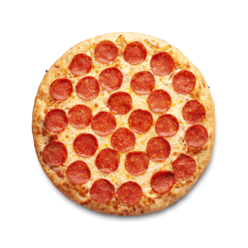
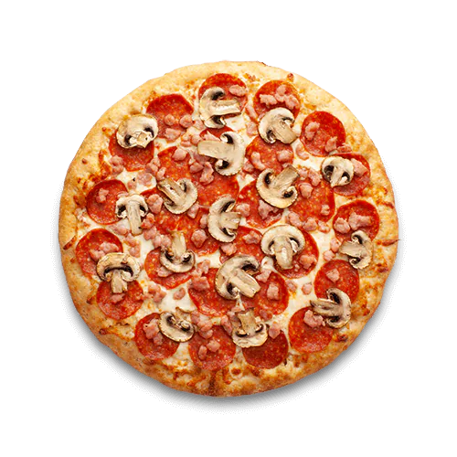
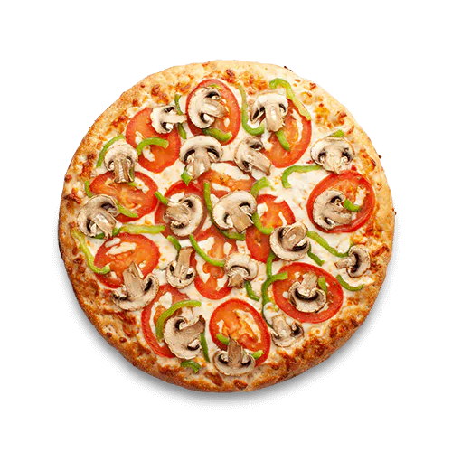

PEPPERONI
La pizza de pepperoni destaca por su simplicidad y sabor. Lleva salsa de tomate, queso mozzarella y generosas rodajas de pepperoni, un salami picante. Es una opción clásica y sabrosa para los amantes de la pizza.
PRECIO $9.000

CANADIENSE
La pizza canadiense combina salsa de tomate, queso mozzarella, pepperoni picante, champiñones, bacon. Es una mezcla deliciosa de sabores intensos en cada bocado.
PRECIO $9.000

DEL JARDIN
La pizza del jardín es una opción vegana o vegetariana que incluye una base de salsa de tomate y queso mozzarella, pero se destaca por estar cargada de verduras frescas. Disfruta de champiñones, pimientos y tomates. Es una elección saludable y llena de sabor para los amantes de las verduras.
PRECIO $9.000